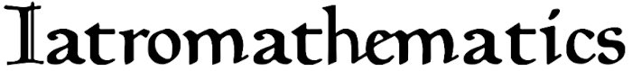

Latin and Greek Version
ABSTRACT
THE «IATROMATHEMATICS» OF HERMES TRISMEGISTOS:
Introduction, text, German translation by Emanuele Rovati
This paper provides a new critical edition of a non-canonical Hermetic treatise, the iatromathematika, an abridgment on medical astrology which can now be safely dated to the 5th-6th c. AD. The reconstructed text marks an improvement over former editions, as they have used solely "codices descripti" [copies of other surviving manuscripts] and failed to take passages from related epitomes such as Pseudo-Galen's "Prognostica de decubitu" and the "Epitome of Pancharius" into conideration. The complicated textual history of these works is dealt with extensively in order to establish their exact relationships; the outcome is a parallel edition of the "Iatromathematika" and the relevant portions of the "Prognostica de decubitu" alongside with a Geran translation of the former, the first one into a modern language. An introduction contextualizes the treatise by discussing its astronomical, astrological, medical, and pharmacological aspects. The use of melothesia, which plays a crucial role in combining astrology and medicine, is investigated with respect to other ancient iatromathematical works. Furthermore, particular attention is paid to prosopography in the course of the codicological inquiry so that the reception of the Iatromathematika can be assessed more accurately.
ENGLISH TRANSLATION OF GERMAN TEXT by Rod Schneider
THE «IATROMATHEMATICS» OF HERMES TRISMEGISTOS
THE MEDICAL ASTROLOGY OF HERMES TRISMEGISTOS
TO AMMON THE EGYPTIAN
The wise men say that Amun, man is a cosmos, since he can be adapted to the nature of the cosmos. For when the human seed is discharged, rays from the seven planets intertwine with each part of the human being; so [it is] with birth according to the position of the twelve signs of the zodiac. For it is said that Aries is the head, and the sense organs of the head are distributed among the seven planets: Thus the right eye is associated with the sun; the left with the moon; the ears with Saturn; the brain with Jupiter; the tongue and uvula with Mercury; the organs of smell and taste with Venus; the blood-rich [parts] with Mars. Therefore, if one of these happens to be in a bad [position] at the time of conception or birth, a certain damage occurs to the part connected to it.
There are four main parts in man: the head, the chest, the hands and the feet. Each of these has been weakened in some way according to the time of conception or birth, if the planet ruling it has become negatively unfavourable; for example, one eye, or both eyes, or one ear, or both ears, or the teeth suffer something, or the ability to speak is prevented. For it is clear that a ray from an evildoer, if it strikes one of these [parts], destroys and damages [it]. The same [applies] to the chest: either the lungs suffer [something], or the liver, or the spleen, or the heart, or one of the [particles] around the intestines. The same [applies] to the hands and the feet: for the fingers or the nails or [other] similar particles suffer something that is peculiar to them.
I was the first to discover this doctrine and I have established that it should be called the servant of nature, for nature must necessarily assist nature; hence the means are created by it. So everything that cools and dries I have assigned to Saturn and Mercury, since they are by nature icy and breath-producing. Everything that warms, creates a mass and relieves tension I have assigned to Mars and the Sun, since they are extremely sharp, fiery and blood-producing. Everything that causes changes, sticks together, refreshes, stops and strengthens all ulcers I have assigned to Jupiter and Venus. The moon, depending on which planet it reaches, either a benefactor or a malefactor, produces a corresponding power.
Therefore, whoever pursues medicine must consider the arrangement of the cosmos and the relationship in which the stars are arranged to one another, because nothing happens to man without the involvement of the stars: neither acute illnesses nor periodic ones, nor is anyone saved by medicine, nor does he receive care and recover or die.
The doctor must therefore carefully examine the time at which the patient's illness occurred. If it is not possible to determine this precisely, then one must determine the time at which the illness announced itself, draw up a plan and consider how the cosmos is arranged and with which planets the Moon is in a relationship - an opposition or a quartile - or with which it is in conjunction. For if it is in aspect with the malefic, it makes the illness harmful; but with the beneficent ones it brings the greatest help. Furthermore, one must also determine whether the Moon is increasing in number and decreasing in light, or vice versa, or whether it is increasing in both or decreasing in both.
For if it increases in both light and number from the conjunction [with the Sun] and is seen by Mars in the quartile, or even moves towards it, it proves the diseases dangerous and fatal until the shift to the opposition, unless a benefactor associates itself. But if one of these associates itself, the disease will be severe and almost fatal, but the sick person will recover. If the Moon decreases in number and light, especially if it is seen by Saturn in the opposition or in the quartile, if the disease does not subside after the shift [to the] opposition, it will be dangerous and fatal. But if benefactors associate themselves, he will recover after having been sick for a while.
If the Moon is in aspect with both benefactors and maleficences at the time of the illness, the pains will continue and occur periodically, but the sick person will recover, although [his health] has been unstable. In addition, one must remember that the illness increases as much as the Moon increases in numbers. But if it begins to decrease in numbers, the illness will also begin to progress for the better. And it is clear that if it [again] increases in numbers, the disease increases until [the moon] dissolves the connection. In this way it will change for the better. Such an investigation should also be made for every catarchic prediction concerning the body.
For those who are ill under [the influence of] Saturn and Mercury will be slow and sluggish, and will feel pain in the joints and all over the body - because of the cold and the mucus that gradually reveals the illness - and they will wake up slowly, have a weak voice, be afraid and frightened, warm themselves with their clothes, flee the light, sigh frequently and be sad, breathe slowly, have weak pulses, find relief in warmth, and show through the pulses that they are weak and listless, be cold on the surface of the body but are still feverish and ice-cold on the extremities, complain violently without having an appetite, but desire wine and cold [water] at inappropriate times. On these, therefore, one must apply the warming [remedies] as well as those that relax those suffering from condensation. On the other hand, those who are ill under [the influence of] Mars and [the] Sun will be agitated and agitated and suffer from inflammations of the body surface, will get up and jump up [from bed], will be angry with family members, will shout, will look insolently with their eyes, will be very thirsty and have a rough tongue, will desire to drink wine and cold [water], but will have no appetite for food and will quarrel with everyone incessantly [“butt their tongues with everyone”]. These too will have weak pulses and be confused, will be red in the face and swollen in the body.
Until the fifth day, bloodletting will benefit them, as well as that which can contract and remove weight, and the remedies which the compelling nature has invented as opposite to them: to the [remedies] of Saturn, the [remedies] of Mars, that is, that which warms, relieves tension and dissolves compaction; to the [remedies] of Mars, that is, that which cools, astringent and represses. Heart, joint, artery and [other] such diseases arise under [the influence of] Mars and the Sun. Constipating fevers, pleurisy, pneumonia and [other] such diseases arise under [the influence of] Saturn and Mercury.
About the cooling [remedies]: So, the cooling [remedies] are opposed to them, such as solanum, Venus's navel, isorion, kombri, groats, koreis, chicory, poppy juice, root bark of the Indian ash, gum, knotweed leaves, houseleek, plantain, halicrotomos, fig leaves, mulberries, tufted duckweed, grapevine leaves, white lead, lithargit, hematite, frankincense, rhakin, feverfew, purslane, egg white, caraway, raw wheat flour, linseed, reed, mallow leaves, pomegranate, yellow rockrose, cypress, ivy leaves, Mediterranean blackberry, Arabian acacia, quince, pears, wild pears, astringents, grapevine inflorescence, dates, myrtle berries, sumac, tuberous sedge, yellow roses, laurel, Mastic tree, labdanum, saffron crocus, floating pondweed.
About the warming [agents]: The warming [agents are those] which are under the power of Mars and the Sun; [i.e.] many different [remedies] as well as all fragrant, including sedum oil, iris oil, cinnamon oil, lily oil, marjoram oil, narcissus oil, fenugreek oil, nard oil, the oil of the stacte of myrrh, mencMsion, resin of Commifora africana, storax, wax, basil oil, caraway, raw and boiled resin, tallow, pith, gum resin, iris, cassia, cinnamon, Indian spikenard, juice of frankincense tree, frankincense from ammonia resin, rue, moringa juice, dried figs, isleberry (?), cnidian berry, soda, field larkspur, lapis asius, tuberous sedum, nettle seed, halcuonion, hellebore, ginseng, peel of sweet violet, chrysocolla, onion, garlic, leek, cabbage bark, chickweed.
The physician will therefore apply these [remedies]—as well as those which warm and relieve tension in a similar way to these—to those for whom the illness occurs through Saturn and Hermes, or [in the event that] another ailment comes to these [sc. the sick] through these [sc. Saturn and Hermes], depending on how the Moon [indicates it]. [The physician will] apply the cooling and repressing [remedies] to those for whom the illness occurs through Mars or the Sun, or another such ailment begins.
Therefore, if someone falls ill when the Moon is in Aries and Saturn forms an opposition or a quartile [with it] or is in conjunction with it, especially when [the Moon] is decreasing in number and decreasing in light, will the illness have its origin in a cold and [the sick person] will have a headache. For around him [sc. the head] there is a heaviness, around the eyes a drowsiness, and a deep sound. There will be mucus around the chest, weak and irregular pulses, night-time aggravation, a lot of warmth in the depths, but the surface of the body will be ice cold and the extremities violently cold, fainting, lack of appetite, fits of sweating at the wrong time. For these [i.e. those who are ill in this way], warming, tension-relieving and constipating remedies will be suitable. But bloodletting will not help. If no benefactor associates with the moon - and neither forms an opposition nor a quartile or is in conjunction with it - [the sick person] will not survive the 7th day, but will die. But if a benefactor associates with it, [the sick person] will recover after being in danger of death, but the illness will continue in the form of other complaints, falling into nocturnal relapses. If Mars also has the same position to the Moon, [the patient] will inevitably die before the opposition.
If someone falls ill when the Moon is in Aries and in aspect to Mars or the Sun, the illness will begin in the head through a heat stroke from the Sun, and [the sick person] will have pain in the meninges. There will also be incessant fever and insomnia, the mouth will be fiery, excessive thirst, the tongue will be delirious, inflammation of the chest, pain in the liver, the pulse will be excited and irregular. For these, bloodletting will be useful, as well as the use of all [remedies] that have a cooling and soothing power: the illness will manifest itself in delirium and phrenitis. If there is no benefactor with the Moon, but Saturn is associated with it, [the sick person] will die until the opposition or [even] until the quartile, especially if the Moon is increasing in numbers. If a benefactor sees the moon, [the sick person] will recover after being in danger of death.
If someone falls ill when the Moon is in Taurus and Saturn is in opposition or quartile or in conjunction with the Moon, especially when the Moon is decreasing in numbers and in light, the illness will have its origin in alcohol intoxication and overfilling. There will be constipating fever, a feeling of pain in the abdomen, pain in the joints, the pulses [will be] excited and irregular, an inflammation of the whole body, a feeling of pain around the lungs. For these, bloodletting will be useful, as well as all [medicines] that can cause weight loss. If no benefactors are associated, [the sick person] will inevitably die before the opposition. But if benefactors are present and see the Moon, [the sick person] will recover after having been in danger of death.
If someone falls ill when the Moon is in Taurus and Mars is in conjunction with it or in opposition or in the quartile, the illness will [begin with] an overflow of blood. There will be incessant fevers, impermeability of the whole body, sore throat, aching sensation in the bones, excessive insomnia, desire for wine and cold [water]. For these, bloodletting is useful, as well as everything that relieves tension. If Saturn has the same position and no benefic joins with the Moon, [the sick person] will not survive the ninth day. But if a benefic forms an aspect, he will recover on the sixth day.
If someone falls ill when the Moon is in Gemini and Saturn is in conjunction or forms a quartile or opposition, the illness will have its origin in insomnia or in a journey, especially when the Moon is decreasing in light. [The sick person] will have pain in the joints and the illness will manifest itself gradually and begin to grow from the third day — until the 30th day. There will be slight fever, emaciation of the whole body, night aggravations [of pain] will torment [the sick person], weak pulse beats, slight sweating, suffering from the spleen. If Mars is in aspect or has the same position, [the sick person] will die after 30 days. If benefactors are present and are in aspect with the Moon, [the sick person] will fall into long suffering and [then] recover.
If someone falls ill when the Moon is in Gemini and Mars is in conjunction or in a quartile or opposition, and the Moon is increasing in number and light, the illness will be dangerous and bad. There will be constant constipating and burning fevers, as well as excited and irregular pulses. These will be helped by bloodletting. If no benefactor sees the Moon and Saturn is in the same position, [the sick person] will die until the opposition. But if benefactors see the Moon, he will recover after being in danger of his life.
If someone falls ill when the Moon is in Cancer and Saturn is in conjunction or in opposition or in a quartile, the illness will have its origin in a bath, in a cold or even in a fit of shivering. There will be mucus around the chest, coughing fits, impermeability and slight fever. For these, anything that warms will be useful. If no benefactors see the Moon, but malefactors are in aspect, [the sick person] will die after having suffered badly.
If someone falls ill when the Moon is in Cancer and Mars is in conjunction or forms a quartile or opposition, the illness will have its origin in a fit of vomiting, in choleric diseases and in the turmoil of the stomach. For these, therefore, everything that cools and astringent will be suitable. If no benefactors see [the Moon], [the sick person] will die by the first quartile. If a benefactor sees the Moon, he will recover after the first quartile.
If someone falls ill when the Moon is in Leo and Saturn is in conjunction or forms an opposition or quartile, the illness will have its origin in overfilling and indigestion. There will be a sensation of pain around the whole chest and tension in the abdomen, the fevers will be violent, the pulses, more heat in the depths than on the [body] surface and impermeability of the intestines. For these, anything that warms up and relieves tension will be suitable. If no benefactor sees the moon, [the sick person] will die until the opposition. If benefactors see the moon, [the sick person] will recover after having suffered much and badly.
If someone falls ill when the Moon is in Leo and Mars is in aspect or forms a quartile or opposition, the disease will have its origin in an excess of blood. There will be fever with diarrhea, weak pulses, fainting, lack of appetite, heaviness, lethargy, flaccidity of the whole body, cardialgia. For these, anything that is astringent and cooling will be suitable. If no benefactor beholds the Moon, [the sick person] will die by the ninth day. If benefactors behold [the Moon], [the sick person] will recover after being in danger of death until the opposition.
If someone falls ill when the Moon is in Virgo and Saturn is with it or forms an opposition or quartile, the disease will have its origin in slowness of digestion and indigestion around the ninth day. There will be pains around the intestines, tensions in the abdomen, constipating fevers, inconstancy in the aggravation and in the abatement of pain. For these, anything that warms and relieves tension will be suitable. If no benefactor sees the moon, the patient will be in danger of death and will die around the 14th day. If benefactors see the moon, the patient will have pain for a long time after he has recovered.
If someone falls ill when the Moon is in Virgo and Mars is in conjunction with it or forms an opposition or a quartile, the illness will begin with a discharge in the intestines. There will be ulceration around the intestines, slight fever with diarrhea, weak and rapid pulses, lack of appetite and turmoil of the stomach. For these, anything that is astringent will be suitable. If no benefactor sees the Moon, [the sick person] will die by the 30th day. If benefactors see [the Moon], he will recover by the will of the gods.
If someone falls ill when the Moon is in Libra and Saturn is in conjunction with it or forms a quartile or an opposition, the illness will have its origin in the consumption of wine and intoxication, especially if [the Moon] is decreasing in light and numbers and the illness occurs overnight. There will be pains both about the head and chest, phlegm, disturbance from cough, a heaviness about the chest, want of appetite, attacks of fever twice a night, incessant pains and weak pulses. For these, anything that is warming will be suitable.
If [the moon] moves alone and is not seen - either waxing or waning or in any way - [and] if [the sick person] loses blood and continues the flow of blood, these [sc. the sick] the moon will relieve them from suffering after it has completed one revolution. They will have a pale or dark [complexion] for a long time, nevertheless they will recover.
If Mars is in the same position, [the sick person] will inevitably die at the quartile.
If someone falls ill when the Moon is in Libra and Mars is in conjunction with it or forms an opposition or a quartile, the illness will [start with] an overflow of blood. There will be violent fevers, excited pulses, insomnia and inflammation all over the body. For these, bloodletting will be appropriate, as well as all [remedies] that can make people lose weight. If no benefactor sees [the Moon], [the sick person] will be in danger of death until the opposition. If a benefactor sees [the Moon], [the sick person] will recover after having been in danger of death.
If someone falls ill when the Moon is in Scorpio and Saturn is in conjunction with it or forms an opposition or a quartile, the illness will have its origin in ulceration or swollen glands or in places not visible, i.e., in the anus or in the genitals. So when the moon increases in number and light, the sick person will recover.
If someone falls ill when the Moon is in Scorpio and Mars is in conjunction with it or forms a quartile or opposition, but [the Moon] is decreasing in light and in numbers, [the sick person] will recover if a benefactor sees [the Moon]. This method must be considered for all signs of the zodiac when the Moon is in Sagittarius and Saturn is with it or forms a quartile or opposition, the illness will have its origin in a running of fluids and a light and bitter discharge of mucus. [The sick] will feel pain in the joints and be afflicted with chills, cold in the extremities, especially when [the Moon] is decreasing in light and in numbers. For they will be afflicted by double attacks of fever and will be in a state of anxiety. For these, what relieves tension and warms up will be suitable. If a benefactor sees the moon, [the sick person] will recover after being in danger of death.
If someone falls ill when the Moon is in Sagittarius and Saturn is with it or forms a quartile or opposition, the illness will have its origin in a flow of fluids and a light and bitter discharge of mucus. [The sick] will feel pain in the joints and be afflicted with chills, cold in the extremities, especially when [the Moon] is decreasing in light and numbers. They will be afflicted by double attacks of fever and will be in a state of anxiety. For these, whatever relieves tension and warms up will be suitable. If a benefactor sees the Moon, [the sick] will recover after having been in danger of his life.
If someone falls ill when the Moon is in Sagittarius and Mars is in conjunction or forms an opposition or quartile and the Moon is increasing in light and numbers, the illness will be dangerous and libidinous: it will [begin] with over-indulgence and alcohol intoxication. There will be fever with diarrhea, gallbladder disease, intestinal perfusion, weak pulse. Anything that cools and astringent will be suitable for these. If no benefactor sees the moon, [the sick person] will be taken away on the seventh day. If a benefactor sees [the moon], he will recover after being in mortal danger until the opposition.
If someone falls ill when the Moon is in Capricorn, decreasing in light and numbers, and Mars is with it or forms an opposition or a quartile, the illness will have its origin in a cold from a bath and a slight discharge of mucus. There will be a sensation of pain around the chest and lungs, acute nocturnal coughing fits, violent fevers. For these, anything that relieves tension and warms up will be suitable. If a benefactor sees the Moon, the illness will last a long time, but [the sick person] will not die.
If someone falls ill when the Moon is in Capricorn and Mars is in conjunction or forms an opposition or a quartile, the illness will have its origin in an attack of vomiting and choleric suffering or in a heaviness of digestion. The illness will therefore be dangerous. There will be lack of appetite, a tension of the nerves, flow in the intestines, sharpness around the anus and ulceration, incessant fever with diarrhea, weak pulses, inflammation around the chest. For these, the condensing and astringent [remedies] will be suitable. If no benefactors see the Moon, [the sick person] will die until the opposition. If the benefactors see the Moon, [the sick person] will recover after the ninth [day], after having been in danger of death.
If someone falls ill when the Moon is in Aquarius and is increasing or decreasing in numbers and light and Saturn is in conjunction with it or forms an opposition or a quartile, the illness will have its origin in fatigue or insomnia or a journey. It will therefore be unstable in the aggravation [of pain] and in [its] remission, and [the sick person] will recover until the opposition, especially when benefics see the moon.
If someone falls ill when the moon is in Aquarius and is decreasing in numbers and light, and Mars is in conjunction with it or forms an opposition or a quartile, the illness will be extremely painful, and [the sick person] will recover from the 19th day after he has been in danger of death, especially when benefics are in aspect.
If someone falls ill when the Moon is in Pisces and is decreasing in light or in numbers and Saturn is in conjunction with it or forms an opposition or a quartile, the illness will have its origin in a cold [from] a bath and in the mucus. The person will have cold, frequent chills, numerous attacks of fever, impermeability, stabbing pains in the breasts, tension in the abdomen. For these, everything that warms up and relieves tension will be suitable. If no benefactors see the Moon, [the sick person] will die until the opposition. If benefactors see [the Moon], he will recover after overcoming the opposition, but will have a long sensation of pain in the nerves.
If the moon is in Pisces and is increasing in number and growing in light, and Mars is in conjunction with it or forms an opposition or a quartile, the disease will have its origin in over-eating or in the consumption of wine. For it begins to grow from the third day onwards through nocturnal aggravations. For there will be inflammation of the body, delirium of the mind, phrenitis, drowsiness around the head, burning fever, violent thirst, desire for wine. For these, bloodletting will be suitable, as well as all [medicines] that can cause weight loss. Therefore, if no benefactors see the moon, [the sick person] will die by the first quartile.
If someone falls ill when the Moon is in any sign with Jupiter or Venus, or is seen by them in opposition or in the quartile, he will recover until the first quartile or until the opposition, after having been in danger of his life. But if malefactors also see the Moon, he will recover after [his health] has been unstable until the opposition. The time of day also contributes greatly to the illness: for if the benefactors are on the ascendant or in the midheaven and the Moon is with the malefactors, [the benefactors] will help [to keep the sick person] alive. The best doctor must therefore have astrological teachings in mind, examine carefully the day and hour of the illness, and observe how the cosmos is arranged. For nothing happens to people without cosmic sympathy.
About
Hi, my name is Rod Schneider and I have created this website to illustrate how, with the help of astrology, that negativity can be converted into something more positive. The astrology being shown here is rooted in the most ancient inceptions derived from Hermetism. It is technical but in the hands of a practitioner already familiar with astrology has great potential to be helpful. There is also much help for non-astrologers to use astrology in a different manner, namely with cycles and phases.Comments and contributions are always welcome.
Contact: rodschneider35@gmail.com